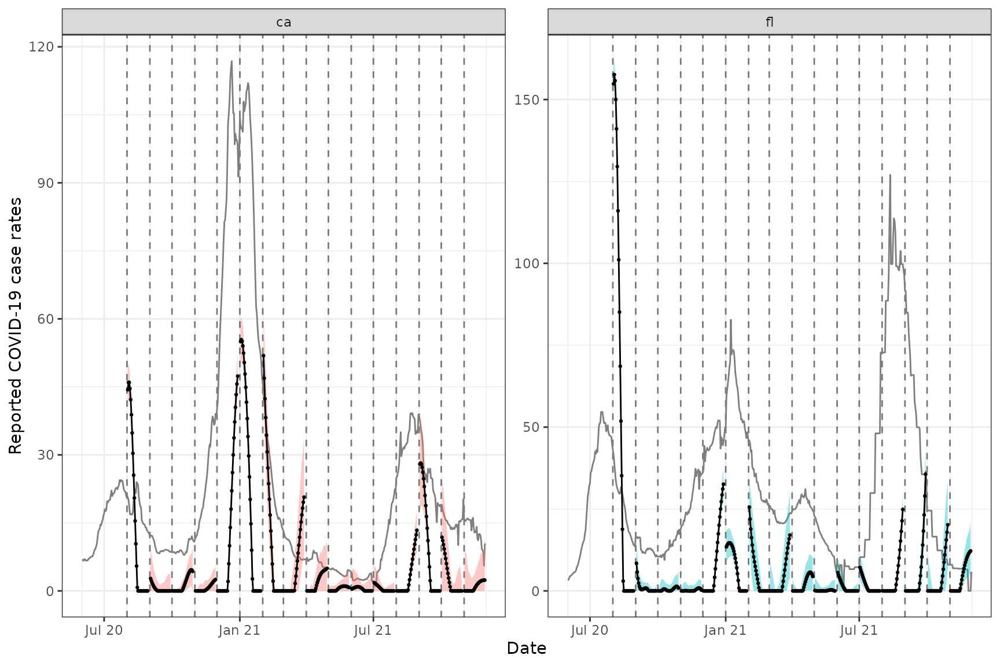
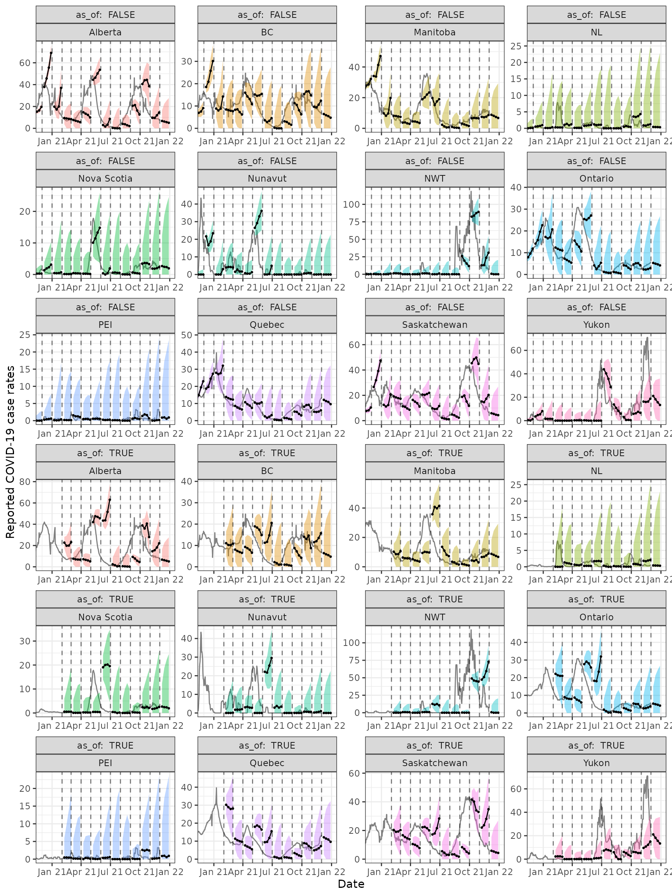
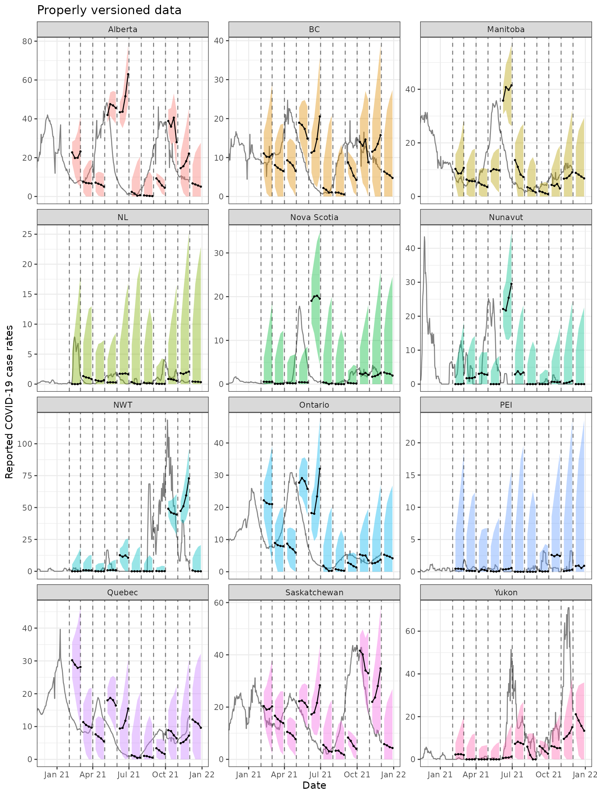

library(epipredict)
library(epiprocess)
# library(covidcast)
library(data.table)
library(dplyr)
library(tidyr)
library(ggplot2)In this vignette, we reproduce the simple forecasting activity described in the epiprocess “Advanced sliding…” vignette. We then go on to demonstrate a similar activity with a more advanced forecaster and on data from another source.
Reproducing the ARX forecaster
First, we download the data and process as before (hidden).
We now make forecasts on the archive and compare to forecasts on the latest data.
# Latest snapshot of data, and forecast dates
x_latest <- epix_as_of(x, max_version = max(x$DT$version))
fc_time_values <- seq(as.Date("2020-08-01"), as.Date("2021-12-01"),
by = "1 month")
k_week_ahead <- function(ahead = 7, as_of = TRUE) {
if (as_of) {
x %>%
epix_slide(fc = arx_forecaster(
percent_cli, case_rate, geo_value, time_value,
args = arx_args_list(ahead = ahead, intercept = FALSE)),
n = 120, ref_time_values = fc_time_values) %>%
mutate(target_date = time_value + ahead, as_of = as_of,
geo_value = fc_key_vars)
} else {
x_latest %>%
epi_slide(fc = arx_forecaster(
percent_cli, case_rate, geo_value, time_value,
args = arx_args_list(ahead = ahead, intercept = FALSE)),
n = 120, ref_time_values = fc_time_values) %>%
mutate(target_date = time_value + ahead, as_of = as_of)
}
}
# Generate the forecasts, and bind them together
fc <- bind_rows(
purrr::map_dfr(c(7,14,21,28), ~ k_week_ahead(.x, as_of = TRUE)),
purrr::map_dfr(c(7,14,21,28), ~ k_week_ahead(.x, as_of = FALSE))
)Here, arx_forecaster() does all the heavy lifting. It creates leads of the target (respecting time stamps and locations) along with lags of the features (here, the response and doctors visits), estimates an autoregressive model, creates predictions, and non-parametric confidence bands.
All of these are tunable parameters.
Now we plot them on top of the latest case rates.
ggplot(fc, aes(x = target_date, group = time_value, fill = as_of)) +
geom_line(data = x_latest, aes(x = time_value, y = case_rate),
inherit.aes = FALSE, color = "gray50") +
geom_ribbon(aes(ymin = fc_q0.05, ymax = fc_q0.95), alpha = 0.4) +
geom_line(aes(y = fc_point)) + geom_point(aes(y = fc_point), size = 0.5) +
geom_vline(aes(xintercept = time_value), linetype = 2, alpha = 0.5) +
facet_grid(vars(geo_value), vars(as_of), scales = "free") +
scale_x_date(minor_breaks = "month", date_labels = "%b %y") +
labs(x = "Date", y = "Reported COVID-19 case rates") +
theme(legend.position = "none")
These look generally not great, but that’s because we’ve only used two locations, and they’re behaviour is rather different.
Smooth forecasts at daily horizons
Because we are making forecasts for multiple horizons, we may want these to be “smooth” rather than jagged as above. One way to do this, described in Tuzhilina et al. is to estimate a version of the multiple least squares model where the response is a vector \(Y \in \mathbb{R}^{d}\) with \(d\) the number of horizons. So, for example, taking \(h = {7, 14, 21, 28}\) as above, would result in \(d=4\). By concatenating these row-wise into a matrix \(\mathbf{Y}\), multiple least squares solves \(d\) OLS problems simultaneously by optimizing \[ \min_\Theta \lVert \mathbf{Y} - \mathbf{X}\Theta \rVert_F^2 \] where \(\lVert\mathbf{A}\rVert_F\) is the Frobenius norm of the matrix \(\mathbf{A}\) given by \(\left(\sum_{ij} a_{ij}^2\right)^{1/2}\) and \(\Theta\) is a matrix of coefficients in \(\mathbb{R}^{p\times d}\).
To produce smooth forecasts, we first expand the vector of horizons \(h\) in some basis (say the basis of \(a\) polynomials, with \(a\leq d\)) and then right multiply \(\mathbf{Y}\) by the result. This leads to the following smoothed optimization problem \[ \min_\Gamma \lVert \mathbf{Y}\mathbf{H}^\mathsf{T} - \mathbf{X}\Gamma \rVert_F^2. \] Predictions can then be produced easily by undoing the transformation with \(\mathbf{H}\). See Tuzhilina et al. for more details.
In epipredict, this methodology is implemented with the smooth_arx_forecaster(). Below, we’ll again make forecasts on the archive, but this time for h=1:28 and a=4.
fc_data <- x %>%
epix_slide(
fc = smooth_arx_forecaster(
percent_cli, case_rate, geo_value, time_value
) %>% nest_by(key_vars), # on each date, this produces a data frame,
# which we nest to allow for sliding.
n = 120, ref_time_values = fc_time_values) %>%
unnest(fc_data) %>% # unnest it to get a long dataframe like before
mutate(target_date = time_value + ahead) %>%
rename(geo_value = fc_key_vars)Everything else works similarly to arx_forecaster() above.
Unfortunately, there’s a bug in this forecaster…
ggplot(fc_data, aes(x = target_date, group = time_value)) +
geom_vline(aes(xintercept = time_value), linetype = 2, alpha = 0.5) +
geom_line(data = x_latest, aes(x = time_value, y = case_rate),
inherit.aes = FALSE, color = "gray50") +
geom_ribbon(aes(ymin = q0.05, ymax = q0.95, fill = geo_value), alpha = 0.4) +
geom_line(aes(y = point)) +
geom_point(aes(y = point), size = 0.5) +
facet_wrap(~ geo_value, scales = "free_y") +
scale_x_date(minor_breaks = "month", date_labels = "%b %y") +
labs(x = "Date", y = "Reported COVID-19 case rates") +
theme(legend.position = "none")
Using data for Canada
By leveraging the flexibility of epiprocess, we can apply the same techniques to data from other sources. Since I’m in British Columbia, may as well do the same thing for Canada.
The COVID-19 Canada Open Data Working Group collects daily time series data on COVID-19 cases, deaths, recoveries, testing and vaccinations at the health region and province levels. Data are collected from publicly available sources such as government datasets and news releases. Unfortunately, there is no simple versioned source, so we have created our own from the Commit history.
First, we load versioned case numbers at the provincial level, and convert these to an epi_archive object. Then we run a very similar forcasting exercise as that above.
# source("drafts/canada-case-rates.R)
can <- readRDS(
system.file("extdata", "can_prov_cases.rds",
package = "epipredict", mustWork = TRUE)
) %>%
group_by(version, geo_value) %>%
arrange(time_value) %>%
mutate(cr_7dav = RcppRoll::roll_meanr(case_rate, n = 7L)) #%>%
#filter(geo_value %in% c('Alberta', "BC"))
can <- as_epi_archive(can)
can_latest <- epix_as_of(can, max_version = max(can$DT$version))
can_k_week_ahead <- function(ahead = 7, as_of = TRUE) {
if (as_of) {
can %>%
epix_slide(fc = arx_forecaster(
y = cr_7dav, key_vars = geo_value, time_value = time_value,
args = arx_args_list(intercept = FALSE, ahead = ahead)),
n = 120, ref_time_values = fc_time_values) %>%
mutate(target_date = time_value + ahead, geo_value = fc_key_vars,
as_of = as_of)
} else {
can_latest %>%
epi_slide(fc = arx_forecaster(
y = cr_7dav, key_vars = geo_value, time_value = time_value,
args = arx_args_list(intercept = FALSE, ahead = ahead)),
n = 120, ref_time_values = fc_time_values) %>%
mutate(target_date = time_value + ahead, geo_value = fc_key_vars,
as_of = as_of)
}
}
can_fc <- bind_rows(
purrr:::map_dfr(c(7,14,21,28), ~ can_k_week_ahead(ahead = .x, as_of = TRUE)),
purrr:::map_dfr(c(7,14,21,28), ~ can_k_week_ahead(ahead = .x, as_of = FALSE))
)The figures below shows the results for all of the provinces. Note that we are showing the 7-day averages rather than the reported case numbers due to highly variable provincial reporting mismatches.
ggplot(can_fc %>% filter(! as_of),
aes(x = target_date, group = time_value)) +
coord_cartesian(xlim = lubridate::ymd(c("2020-12-01", NA))) +
geom_line(data = can_latest, aes(x = time_value, y = cr_7dav),
inherit.aes = FALSE, color = "gray50") +
geom_ribbon(aes(ymin = fc_q0.05, ymax = fc_q0.95, fill = geo_value),
alpha = 0.4) +
geom_line(aes(y = fc_point)) + geom_point(aes(y = fc_point), size = 0.5) +
geom_vline(aes(xintercept = time_value), linetype = 2, alpha = 0.5) +
facet_wrap(~geo_value, scales = "free_y", ncol = 3) +
scale_x_date(minor_breaks = "month", date_labels = "%b %y") +
labs(title = "Finalized data", x = "Date",
y = "Reported COVID-19 case rates") +
theme(legend.position = "none") 
ggplot(can_fc %>% filter(as_of),
aes(x = target_date, group = time_value)) +
coord_cartesian(xlim = lubridate::ymd(c("2020-12-01", NA))) +
geom_line(data = can_latest, aes(x = time_value, y = cr_7dav),
inherit.aes = FALSE, color = "gray50") +
geom_ribbon(aes(ymin = fc_q0.05, ymax = fc_q0.95, fill = geo_value),
alpha = 0.4) +
geom_line(aes(y = fc_point)) + geom_point(aes(y = fc_point), size = 0.5) +
geom_vline(aes(xintercept = time_value), linetype = 2, alpha = 0.5) +
facet_wrap(~ geo_value, scales = "free_y", ncol = 3) +
scale_x_date(minor_breaks = "month", date_labels = "%b %y") +
labs(title = "Properly versioned data", x = "Date",
y = "Reported COVID-19 case rates") +
theme(legend.position = "none") 